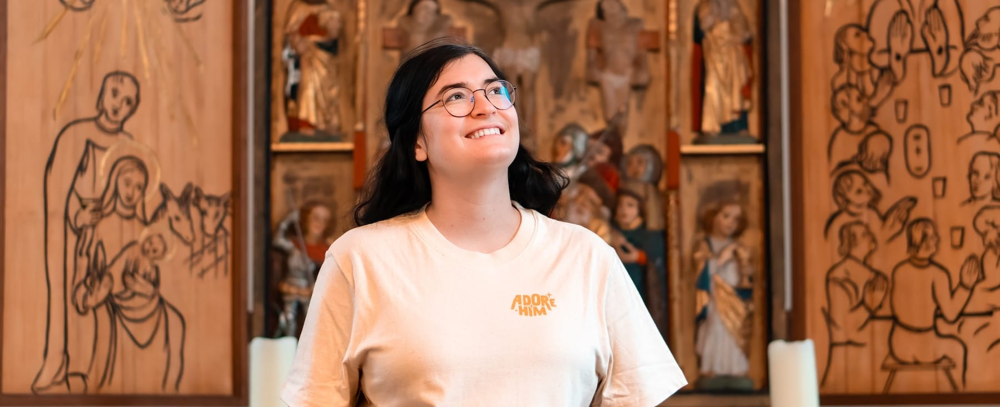
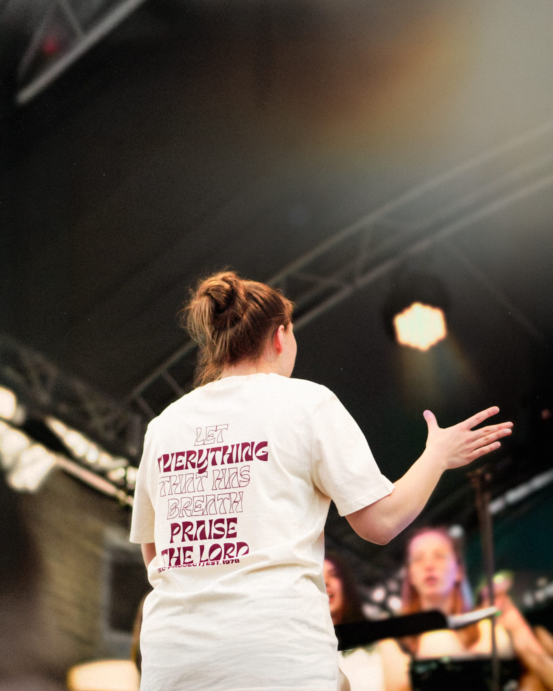
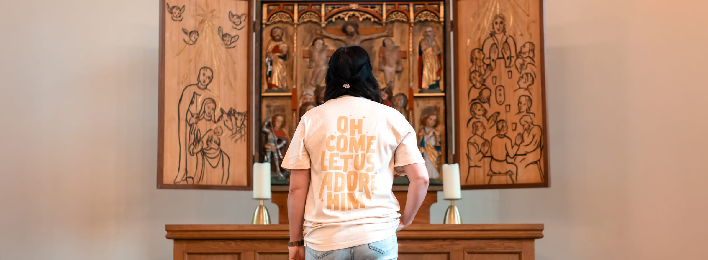

Ihr sucht neue Kleidung für eure Jugendarbeit, einen Junggesellen-Abschied oder ein Geschenk? Ihr
habt eine Idee, was
auf der Kleidung stehen soll, oder nur grobe Vorstellungen?
Es ist uns ein Anliegen
euch zu
unterstützen und eure Ideen
Wirklichkeit werden zu lassen. Es gibt keine Mindeststückzahl. Wir produzieren für euch auch
Unikate und Kleinserien.
Ihr habt Interesse? Dann schreibt uns über das Kontaktformular und direkt per DM bei Instagram

In unserem Blog erfährst du regelmäßig, was bei handheldt passiert. Wir teilen Updates zu neuen Projekten und Einblicke hinter die Kulissen.
Für unser neuestes Projekt durften wir ein ganz besonderes Shirt gestalten: Ein frisches Design für den Chor des
[EC-PROJECT], entstanden anlässlich des Rheinland-Pfalz-Tags in Neustadt. Der große Auftritt war der perfekte
Anlass, die in die Jahre gekommenen Shirts zu überarbeiten und mit
einem neuen Look zu versehen.
Das Motiv basiert auf Psalm 150,6 und bringt auf den Punkt, worum es bei diesem Chorprojekt geht: mit allem, was
Atem
hat, Gott zu loben.
Im Video seht ihr einen kleinen Blick hinter die Kulissen – vom Druck bis zum fertigen Auftritt auf der
Bühne.

Hier beantworten wir einige Fragen, die uns öfter gestellt werden in kurzen Videos:
Der Name ist ein Wortspiel mit unserem Nachnamen „Heldt“ und dem Begriff „Handheld.“ Einerseits steht der Name für die Individualität von Handarbeit – wie beim Filmen aus der Hand, wofür der Begriffhäufig verwendet wird, ist kein Stück genau gleich. Andererseits bedeutet er auch „tragbar“. Für uns bedeutet das nicht nur, dass man Kleidung trägt, sondern auch, dass unsere Kleidung Werte repräsentiert, die tragbar sind.
Elisas Famile hat ihr vor ein paar Jahren zu Weihnachten ein Siebdruck-Starterset geschenkt, weil sie Lust auf ein neues Hobby hatte. Das hat uns beiden sofort Spaß gemacht! Seitdem haben wir gemeinsam viele Projekte umgesetzt und irgendwann gedacht: „Warum nicht einen Shop daraus machen?“ So können wir unser Hobby und unsere Kreativität teilen.
Wir arbeiten viel als Team, weil wir uns als Paar super ergänzen. Beim Siebdruck hilft es, wenn man vier Hände statt zwei hat. Ansonsten: Philipp hat die Website erstellt und schneidet die Videos, während Elisa sich um Instagram kümmert. Auch die Designs für die T-Shirts haben wir untereinander aufgeteilt.
Ja, das war von Anfang an ein wichtiger Punkt für uns! Schon bevor wir handheldt gegründet haben, haben wir kleine Auflagen für Jugendarbeiten, Freizeiten oder Geburtstagsgeschenke erstellt. Genau das möchten wir jetzt für noch mehr Menschen möglich machen: individuell bedruckte Textilien in kleinen Auflagen zu fairen Preisen.
Siebdruck gehört zu den hochwertigsten Methoden, um Textilien zu bedrucken. Der Druck ist langlebig, nachhaltiger als viele andere Verfahren und verleiht den Stoffen ein besonderes haptisches Gefühl. Die Drucke verschmelzen mit dem Textil und halten deutlich besser als viele andere Methoden.
Philipp ist in Nepal aufgewachsen, und deshalb liegt uns das Land besonders am Herzen. Wir haben die Arbeit des EC in Nepal vor Ort kennengelernt und waren beeindruckt, wie Kindern in abgelegenen Regionen geholfen wird, Zugang zu Bildung zu bekommen. Diese Arbeit gibt ihnen eine Perspektive für die Zukunft. Mit unserem Gewinn möchten wir dazu beitragen, diese Projekte weiterhin zu unterstützen.
Zum SpendenprojektIhr habt schon ein Design, das ihr gerne drucken lassen wollt? Super! Wir beraten euch gerne, was für euch am besten passt. Aber auch wenn ihr nur eine Idee habt, stehen wir euch gerne zur Seite und helfen euch bei der Umsetzung. Melde dich gerne über das Anfrageformular bei uns, um ein unverbindliches Angebot zu bekommen.